In early 2015, Swiggy's business and operations were starting to grow exponentially. The team was looking to grow from 300 to 300,000 orders per day by the end of 2016. However, the experience of online food-ordering was in very bad shape. Hungry users had to go through broken checkout flows, deal with ill-managed addresses and wait impatiently on a dumb & opaque delivery process.
We wanted to change this and make food-ordering ‘second nature’ to our hungry customers.
Challenges
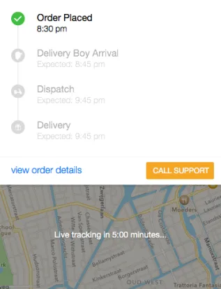
Delivery tracking
A text-heavy representation of the underlying logistics, along with un-intuitive tracking caused a lot of anxiety in users. This also led to a lot of un-necessary support calls.
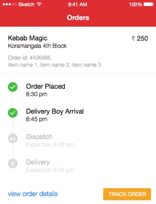
Logistical transparency
We found that our choice of logistical steps communicated to users was leading to confusion regarding the ‘current status’ of their order. These choices were also not good at accounting for any mis-haps during the delivery operations.
Research & context
Swiggy has consumer-facing apps on iOS, android and the web. Swiggy’s delivery fleet operate across multiple localities and cities with varying constraints and demands. Today, Swiggy is the leading food ordering and delivery platform in India.
Prior to the redesign, we had conducted multiple interviews with some of Swiggy’s most loyal customers regarding their daily food ordering habits and the common issues they were facing. We observed that many of our early customers ordered multiple times in a week. We also saw that some of them had placed orders from multiple locations. These two observations helped us cement product values that revolved around continuity of service and ease-of-repetition.
Another key insight we got from our research was that, after ordering, customers go through a lot of anxiety in waiting for their food. Hunger is one of the primal needs of us human beings.
Evolutionary psychology also tells us that hunger, as an experience is designed to induce anxiety and fear when deprived of food. Leading to better chances of survival.
Our conversations with customers (both on call and in-person) led us to areas of improvement within the product experience that would enable customers to be in control of their orders and hence reduce this primal anxiety.
The goal
The primary goal of our redesign was to re-think and improve the core flows of the consumer apps, across iOS, android and web. These included restaurant/food discovery, browsing menu & order creation, checkout & order-tracking and managing multiple delivery locations. Additionally, we planned to revise the product visuals in accordance with the rebranding done during late 2014.
We also expected our changes to reduce inbound support call volume for on-going orders and also reduce friction in onboarding new users.
Solutions
Many customers told us they were very anxious about the “current status” of their food delivery more than anything else. Previously, the track order feature was buried under a CTA on the order details page. Many users would navigate into these pages to find the track order CTA to track their ongoing order.
We eliminated this manual effort by implementing live tracking via google maps and surfacing the map screen to the top most level.
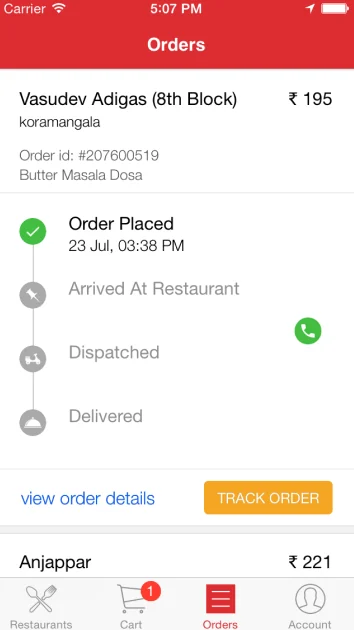
A text-heavy representation of the underlying logistics, along with un-intuitive tracking was leading to a lot of anxious customers waiting for their food.
This also led to a lot of un-necessary support calls for on-going orders.
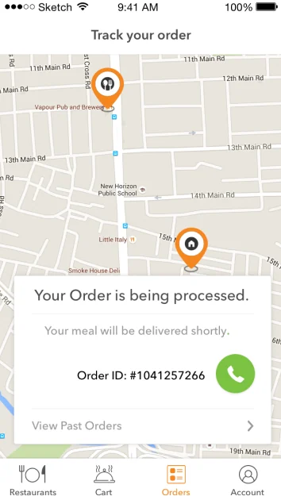
We redesigned the order tracking flow by putting a real-time map front & center.
Focus and weight is given to necessary info like order ID (used for support calls) rather than bill amount or address of restaurant.
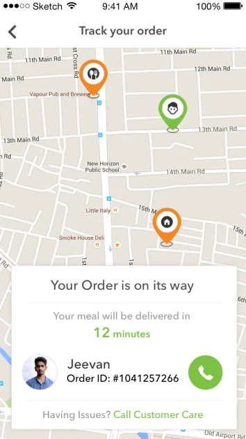
Delivery ETA and CTAs for phone calls to delivery agent and customer care are revealed progressively at later stages of the delivery cycle.
Every time a user had an active order, live tracking became the default screen on app launch.
Along with live tracking, we also had to standardise the communication around the logistical milestones of a Swiggy order. Through early testing we found that users felt more in-control of their orders when Swiggy’s logistical efforts were communicated to them in real-time and clearly.
We identified 4 important milestones that corresponded to most common worries a Swiggy user had during an active order.
| User worries | Milestones |
|---|---|
| Is my order confirmed by the restaurant? | Order confirmed by the restaurant |
| How long will this order take? | Delivery person assigned to the order |
| Where is the delivery guy? | Food is en-route to delivery |
| Was my food actually delivered? | Order delivered |
Stages of an ongoing Swiggy order
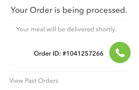
Initial state when the order is captured within Swiggy’s systems but might not yet be confirmed by restaurant partners.
We expose a call CTA that leads the user to a support executive.
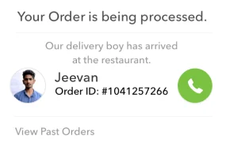
During 2015/16, many of the restaurant partners required manual confirmation of a Swiggy order via a delivery executive.
At this point in time, we decided to let users contact the delivery executive directly for smoother operations.
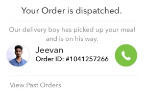
After confirmation, users had to wait for an additional 10-15mins while the restaurant prepares and packs the order.
Delivery guy ‘picking up’ the order formed a signficant mental milestone for users who were waiting on an opaque process.
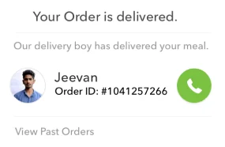
Once the last-mile communications were completed, we confirm the actual delivery of the order via a 4digit code.
Swiggy delivery executives can enter this code only at the delivery location. This feature helped us reduce last-mile support calls significantly.
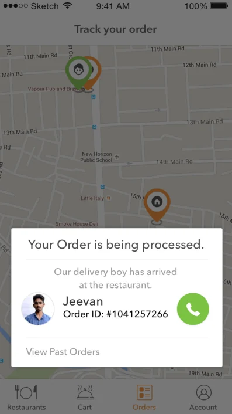
Along with exceptional delivery time SLAs mantained by Swiggy, standardising these steps across orders helps users develop a muscle memory of how Swiggy operates and makes food ordering easy and habitual.
Restaurant discovery
As the number of restaurants and service areas of Swiggy grew, the old design was becoming inefficient in discovery/spotting. We observed that users were spending a lot of their time scrolling this screen indecisively.
Retention data for weekdays showed us that most users would stick to 3-4 favorite restaurants for all their orders.
Also as Swiggy’s SLAs got better, details like the exact location of restaurant were becoming irrelevant as compared to delivery time.
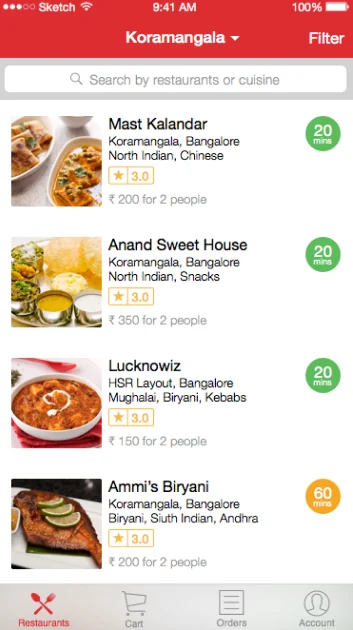
The old design was becoming inefficient in discovery/spotting as the number of restaurants and operation area grew.
Details like the location of restaurant were becoming irrelevant as compared to delivery time.
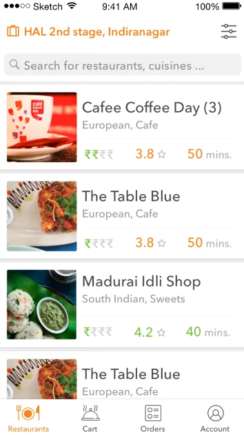
We redesigned the restaurant browsing screen with a focus on answering the 3 main questions that our users had while choosing food.
How costly is the food?
How good is the food?
How much time will it take to deliver?
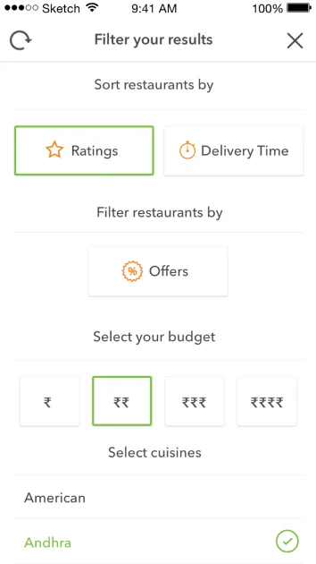
We also re-designed and introduced new filters that made sense for the food-delivery scenario, like ‘filter via budget’ and ‘filter via offers’ which helped us cater to a large audience of cost-sensitive users in India.
Enhancements to the menu
In late 2015, Swiggy started partnering with established fast-food chains and franchisee outlets for food delivery. Some of the early partners included Dominos Pizza, McDonalds and Cafe Coffee Day. These partnerships brought in new use-cases to solve for, such as variants and toppings of a food item and choosing from multiple franchise locations.
We teamed up with folks from the product and data intelligence teams to analyse every food item from Swiggy’s catalogue. This enabled us to create a relational database of “main dish” + “accompaniments” (Like Biriyani + Cold Drink or Ice cream). We also started recommending some items on the Cart screen and food customization screen to ‘cross sell and ‘upsell’ beverages/ice creams, the relevance of the accompaniments led to an increased order value and over time, reach the median order value of Rs 200 per order.
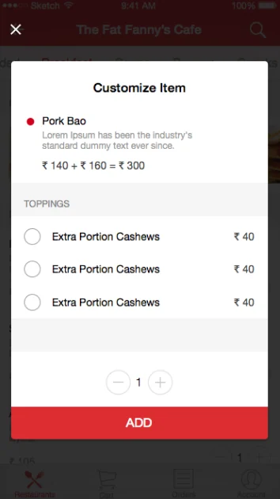
Menu item with toppings
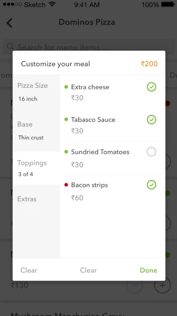
Menu item with multiple variants, toppings and extras/add-ons that can be purchased.
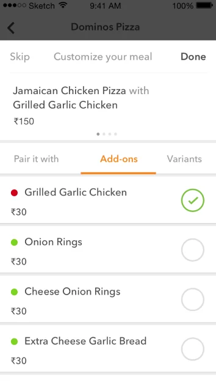
These new designs also formed a good base, allowing the product team to run cross-sell and up-sell experiements across restaurants.
These design-led experiments within the food-ordering flow eventually allowed us to increase the average order value from Rs.120/order to Rs.200/order.
This bump further helped the unit economics of the business at the time, aiding even more efficient delivery ops and hence better earnings for delivery executives.
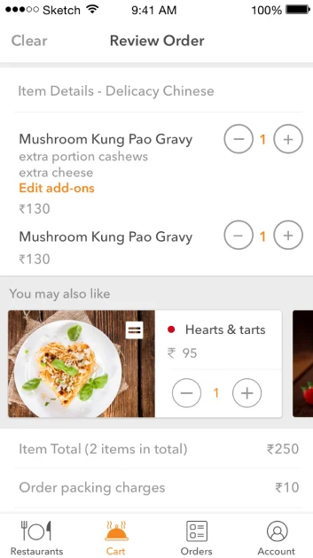
Up-selling complementary items on the cart screen
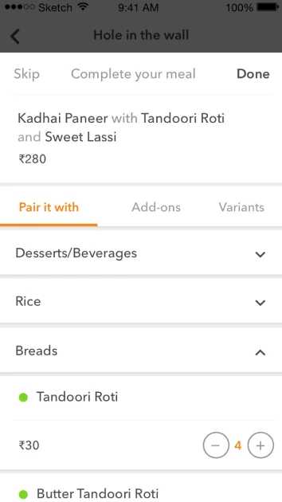
Up-selling complementary items during meal creation in menu.
Get me the food, wherever I am
In the old design, adding a new delivery address and managing existing addresses was manual and a pain which users had to go through for every order.
For the background ops, Swiggy was already using LAT+LONG of restaurant and delivery locations. This ensured accuracy and streamlined the operations. However, in the consumer apps, we were still relying on manual text address inputs from our customers. This was leading to a lot of last-mile calls between delivery executives and customers, especially to pin-point the address.
To eliminate this manual errors, we advocated for auto-filling the address fields via google maps API. This made the ‘add a new address flow’ more accurate and easy for the users to manage. Coupled with the training efforts, this accuracy further helped the logistics/operations teams to perform better, by eliminating many last mile phone calls between users, delivery personnel and Swiggy’s customer care.
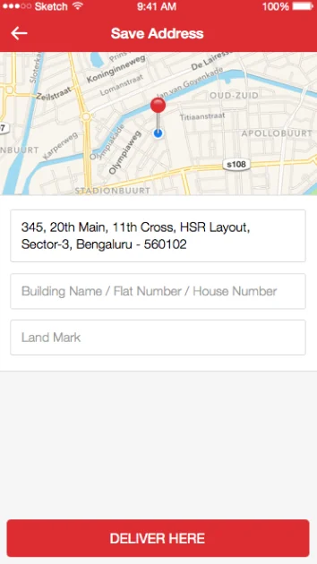
Manual address field inputs
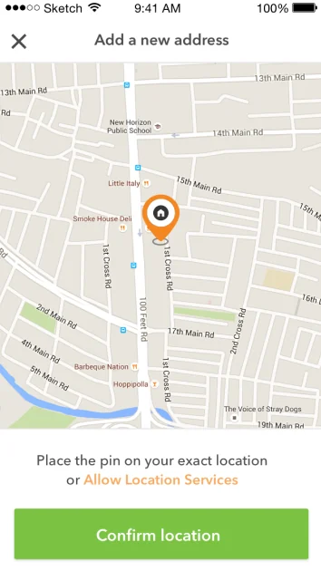
Allow the user to place their address accurately on a more intuitive interface like a map.
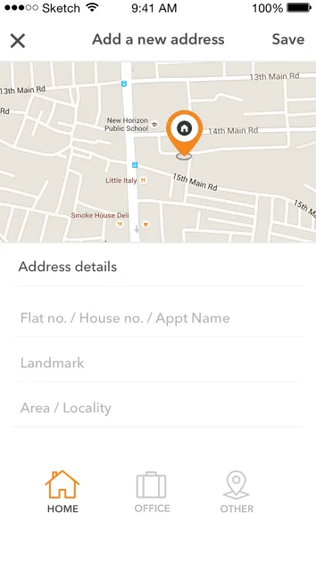
Address fields are fetched from google maps API and users are asked to tag the address allowing for a breezy order experience in future.
During user interviews, we observed that people think of delivery locations as “home” or “office” or “Friend’s house”.
This prompted us to design tags for delivery addresses allowing a more seamless and natural switch between locations.
We also observed that this made it easier for users to be sure of their current delivery location.
Our incredible dev team also developed a feature logic, based on the GPS data and time of the day - the app automatically fetches the right address and gives the list of restaurants. Thereby eliminating manually choosing the address on every app launch.
Future track
Since 2016, Swiggy has championed customer experience and scaled their food delivery business across major cities in India. With a focus on delighting their customers, they remain the leading startup/product in the food delivery sector. They have continued to build on the core value proposition and launched many successful initiatives like cloud kitchens(bowl company, homely) and Swiggy Pop, a food first approach that makes it even easier for the users to get food delivered ASAP.
Food delivery startup Swiggy raises $1 billion more from Naspers, Tencent and others